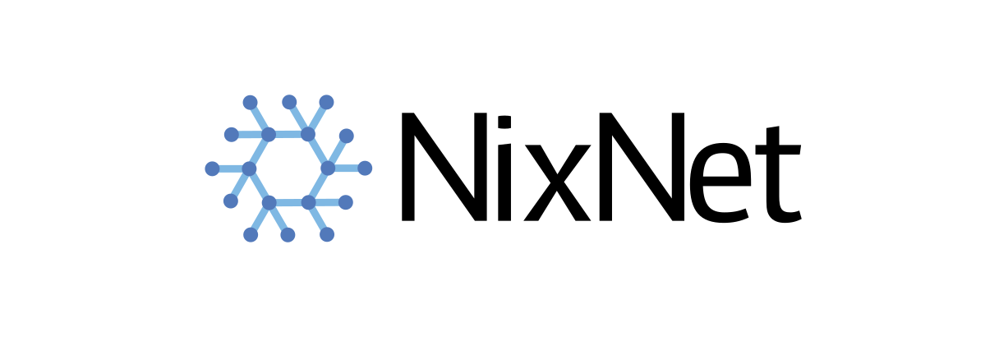
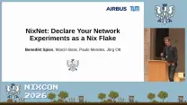
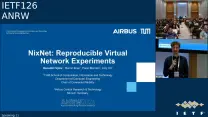

NixNet: Reproducible Virtual Network Experiments
ANRW '26 - Applied Networking Research Workshop 2026

Try NixNet in a VM right here in your browser.
But just because you can, does not mean you should!
This is emulated, expect it to be slow.
For the full experience, run it natively on your favorite Linux machine.
This VM is powered by v86, Linux 6.18.35 ~ # nix run warning: you don't have Internet access; disabling some network-dependent features copying "/root" to the store testbed| workdir: /root/out/00 testbed| network topology set up client| main (PID 535) started client| PING 10.0.0.2 (10.0.0.2) 56(84) bytes of data. client| 64 bytes from 10.0.0.2: icmp_seq=1 ttl=64 time=85.0 ms client| 64 bytes from 10.0.0.2: icmp_seq=2 ttl=64 time=125 ms client| 64 bytes from 10.0.0.2: icmp_seq=3 ttl=64 time=124 ms client| 64 bytes from 10.0.0.2: icmp_seq=4 ttl=64 time=89.8 ms client| 64 bytes from 10.0.0.2: icmp_seq=5 ttl=64 time=116 ms client| 64 bytes from 10.0.0.2: icmp_seq=6 ttl=64 time=101 ms client| 64 bytes from 10.0.0.2: icmp_seq=9 ttl=64 time=108 ms client| 64 bytes from 10.0.0.2: icmp_seq=10 ttl=64 time=106 ms client| 64 bytes from 10.0.0.2: icmp_seq=11 ttl=64 time=110 ms client| 64 bytes from 10.0.0.2: icmp_seq=12 ttl=64 time=126 ms client| 64 bytes from 10.0.0.2: icmp_seq=13 ttl=64 time=74.8 ms client| 64 bytes from 10.0.0.2: icmp_seq=14 ttl=64 time=119 ms client| 64 bytes from 10.0.0.2: icmp_seq=15 ttl=64 time=104 ms client| 64 bytes from 10.0.0.2: icmp_seq=16 ttl=64 time=115 ms client| 64 bytes from 10.0.0.2: icmp_seq=17 ttl=64 time=93.3 ms client| 64 bytes from 10.0.0.2: icmp_seq=18 ttl=64 time=93.5 ms client| 64 bytes from 10.0.0.2: icmp_seq=19 ttl=64 time=109 ms client| 64 bytes from 10.0.0.2: icmp_seq=20 ttl=64 time=118 ms client| client| --- 10.0.0.2 ping statistics --- client| 20 packets transmitted, 18 received, 10% packet loss, time 19061ms client| rtt min/avg/max/mdev = 74.821/106.467/125.862/14.160 ms testbed| PID 535 exited with 0 testbed| cleaning up... ~ #
Browse ready-to-run experiments covering common network topologies, protocol benchmarks, and impairment scenarios.
Browse ExamplesNixNet is easy to setup on any Linux machine and only requires a Nix installation.
Detailed instructions for your specific system are available in our documentation.
ANRW '26 - Applied Networking Research Workshop 2026
Connected Mobility Doctoral Seminar 2026
Schliersee, Germany

NixCon 2026
Kraków, Poland

ANRW '26 - Applied Networking Research Workshop 2026
Vienna, Austria
Connected Mobility Doctoral Seminar 2026
Delft, Netherlands
TUM Chair of Connected Mobility 2026


NixNet made our experiments fully reproducible across machines. What used to take days of setup now runs in minutes.
Sharing testbeds with students and colleagues has never been easier.
In the Protocol Design course, we specified and implemented our own network protocol from scratch. NixNet helped us understand its behavior in various network conditions.
The full option reference is available in the NixNet Wiki, covering all module options with types, defaults, and descriptions.
Look up OptionsIs NixNet deterministic? Does it only run on NixOS? How does it compare to alternatives?
Find answers to these and other common questions in the FAQ.
Check out the code, contribute, and find many more examples on GitHub.
Explore GitHub